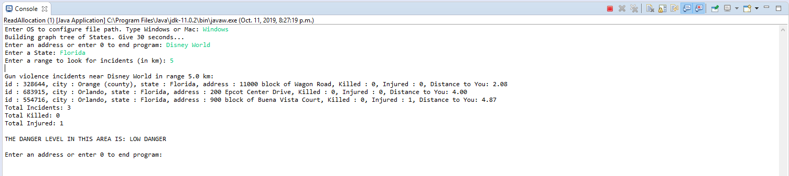
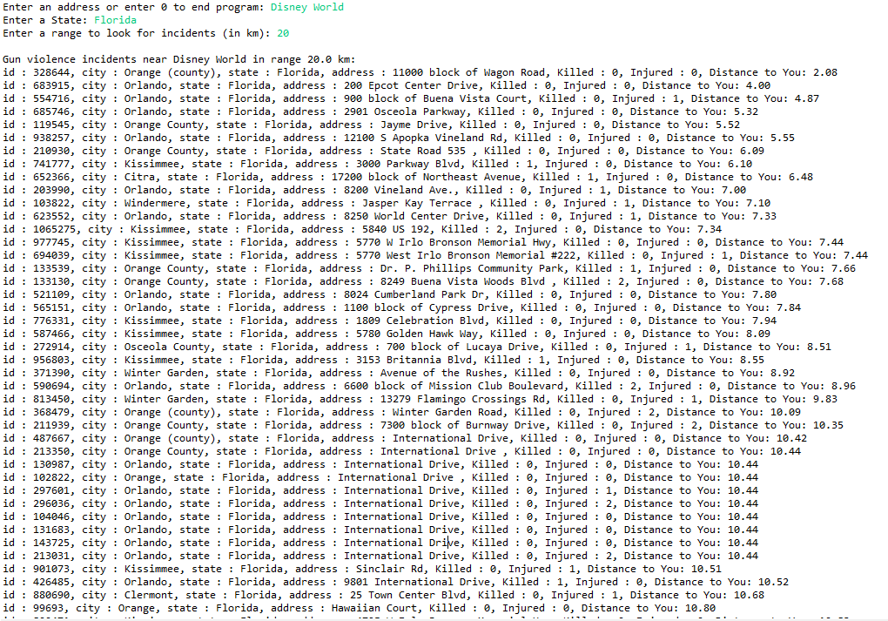
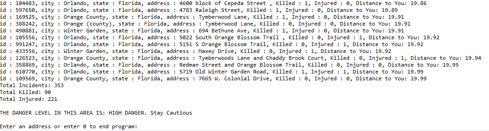

ThreatDetect is an application that was created as a final project for my Software Engineering practice and Experience course with a group of 5 (including myself). This application takes a valid address, the respective state of the address, and a radius measured in kilometers and outputs the amount of incidents related to gun violence that occured in the given radius. The dataset that is used to display the information is government issued, and contains the exact addresses, longitude, and latitude coordinates of gun violence incidents from 2013-2018. This application is based in the United States, along with the government issued data. Through the use of a geocoder, we were able to convert addresses to their respective longitutde and latitude coordinates in order to determine which incidents resided within the given radius. The application includes a graphical user interface to make it user friendly.
After thorough testing, it was determined that the graphical user interface (GUI) increased the overal time complexity of the application. Hence, we decided to make the GUI optional, and included a console based application as well. The console based application displayed all the information onto the console as well as a text file that is returned as output.
The following is an example of how the console application ran:
  
As you can see from the pictures, upon increasing the radius, the number of incidents also increased. A final threat level is also determined through a formula that was devised by the group. This application manages to search and sort hundreds of thousands of data entries in mere seconds through the optimized use of a Red-Black BST and quick sort.
This is one of my favourite projects as I greatly enhanced my understanding of important data structures, algorithms, and importance of time complexity.